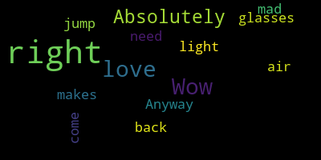

[Burke]: I need my glasses, I'll be right back.
[Carter]: Good evening, friends and neighbors. My name is Terry E. Cotter, and I direct elder services here at our beloved West Medford Community Center. Welcome to another live edition of First Friday's Words and Music, or as we call it when we're not on the first Friday, Flex Friday's Words and Music. We're happy to be following up a great Black History Month program with another special offering in celebration of women's history across the United States. Thanks to a generous grant from the Medford Arts Council, a member of the Massachusetts Cultural Council, we are ready to roll again at 111 Arlington Street. As ever, I want to remind you that COVID is still a thing, and we're still trying to be mindful of local health requirements and concerns. So masking is welcomed, but not required. We're just happy to be sponsoring live programming here at WMCC and glad to see our neighbors, our friends and supporters coming through the doors. Thank you so much for being here. Thanks also to Kevin Harrington and Medford Community Media for guiding us as we broadcast to you via Medford Community Media channels nine for Comcast and 47 for Verizon. If you're out there watching on your electronic devices, your 60 inch screens, whatever it might be, welcome to the show. So in my travels as a poet and as an ambassador for the arts, I've been privileged to encounter some tremendous teachers, leaders, and history makers across a wide panorama of human endeavor. Words and music has given me that opportunity to bring a lot of those folks to your attention. Tonight is no exception, so I hope you're ready for something really special. Our guest for this portion of the evening's program is my friend and a woman who can truly be considered a history maker. Let me tell you a bit about her. Dr. Sheila E. Nutt, two Ts, is a Newton resident and a former director of educational outreach programs for Harvard Medical School's Office of Diversity, Inclusion, and Community Partnership. My wife, Teresa, worked with her for a number of years, and we met through that relationship. Our paths crossed on a regular basis as I volunteered annually for a community-based student engagement event called Reflection in Action, a program that examined health disparities in the inner city and brought together students for greater agency and understanding in combating these inequities. That program, in and of itself, could certainly be considered history-making. And yet, Dr. Sheila, as she has been known affectionately by closest and dearest, made history long before her tenure at Harvard, a tenure which she retired from several years ago. So in 1970, Sheila Nutt became one of the first African-American flight attendants working for Pan American World Airways. Over 50 years have passed since Sheila helped make that history. She was part of the first wave of African-American women hired as stewardesses, as they were called back then. A half century ago, flight crews were mainly white, as were the passengers. After the Civil Rights Act of 1964, airlines had to start hiring people of color. In 1969, when Dr. Sheila was 20 years old and living in Philadelphia, she heard Pan Am was hiring and wanted in. Let's explore that history with Sheila, but make sure your tray tables are locked and your seats are in the upright position. Oh, and there might be some turbulence ahead. So as is my custom in hosting these evenings, I'd like to share a piece of verse that I shared with Dr. Sheila several years ago when she was doing some work on her program involving her colleagues and her history with PNM. And that piece of poetry is called Song of the Blackbirds. We are called the Blackbirds. It has a ring that speaks to our natural woman thing. Pin M said yes and got the best as chocolate doves embraced the test. Not willowy blondes or buxom brunettes. We Blackbirds flew beyond regrets. We filled those uniforms just as well and answered that lofty airborne bell. To serve with dignity and distinction, service like this is close to extinction. 35,000 feet in the air, we were a flight crew beyond compare, telling the nations we weren't just white. Through work and worth, we all took flight. Ebony, tan, and caramel sweet, lovely sisters. whole and complete. Though attitude might be detected, we made our flyers feel safe and respected, rising above the scorn and disdain, striving to make our excellence plain. Only the well-to-do flew with us, and rich folks really make a fuss. We had to be humble right from the start. We had to be pretty, resourceful, and smart. Like nurses, we treated our patients well, even the ones that gave us hell. The smallest kindnesses we would make, like mixing a traveler's cold milkshake or fluffing the pillow of a boar whose ignorance we must endure. Yet class and dignity ruled the day. That is the enduring Blackbird way. Traveling the globe on speeding jets, circling the world as good as it gets, exploring exotic ports of call, winter and spring, summer and fall. Aboard that luxury 747, just a whisper away from heaven. We show white folks a grace unknown in all the flights they'd ever flown. Pan Am said, yes, let's give them wings. We'll see just what their color brings. Just call us Blackbirds and hear the ring that speaks to a sister's natural swing. Yes, call us Blackbirds. It has that ring. It speaks to our natural woman thing. Give her a hand! Oh my gosh! Thank you. Thank you. All right. I just want to say something. Dive in.
[SPEAKER_03]: The Blackbirds, a group that I founded in 1918, we had a gathering of Blackbirds at Harvard Medical School. And I called upon my wordsmith friend, Mr. Terry to bring a little class, a little more class to the event and see if he could create a poem for us and this is what he came up with and I think it's fabulous and I think he deserves another round of applause.
[Carter]: All right, so let's dive right into this. Dr. Shill, you've done a number of interviews with the news media, including WBUR and CNN, among others. I'm always locked in on your pursuit of the opportunity to work with Pan Am as a 20-year-old college graduate. So can you talk about your initial interview with Pan Am?
[SPEAKER_03]: Well, let's go back just a little bit. I graduated from the Philadelphia High School for Girls in 1966. You can do the math, okay, and figure out how old I am. It was the only exam school for girls in Philadelphia at the time. There were very few of us women of color or young girls of color at that time. And we were all programmed to go to college, post high school. However, when we were encouraged or when we had the interviews and the conversations with our guidance Councilors, many of us were told, oh, you're going to make a fabulous dental hygienists. You're going to make a fabulous beauty parlor somebody or another. And so when we went home to our parents and said, you know, this is what they're guiding us towards, Our parents were like, oh, no, that's not how we roll. Some of us were third generation college graduates who had been to HBCUs. They were professionals. And it was like, oh, no, no, that's not how we roll. However, I always wanted to be an actress. In 66, I wanted to be a ballerina. And I was told that there was no future for a black ballerina. That was just the beginning of the dance companies like Alvin Ailey. And so I believed that. And I said, well, I'm going to be an actress and a model. How do I do that? So I entered the Miss America contest in Philadelphia. In 1968, I was the only black to enter the contest, and that particular contest was the first step towards getting to the main Miss America contest that takes place in September in Atlantic City, New Jersey. I prepared, I was excited, and I was thinking, oh boy, if I win, I'm gonna get discovered, and I will go to Hollywood, and oh, I was just, I had it. So, the evening came, I was prepared, and I was one of the few participants standing as they were calling who was the winner. So they did third runner-up, second runner-up, and I'm still standing. Okay, there's a chance. And then they came to first runner-up, and that was my name. I was a little pissed, but you know, I'm black. I'm happy for first runner-up. And then they announced the queen. And so we all took photographs, and we were happy and bubbly. So when we're leaving the venue, One of the judges came to my parents and me and asked if they could talk to my mother in private. They pulled her over to the side and they said, we were unanimous in our choice of the queen. We really wanted Sheila to win, but we weren't ready for a black queen. Let that sink in a minute. They weren't ready for a black queen. Not because my talent wasn't good enough. Not because I didn't answer the questions professionally. But because of the color of my skin that God had given me. So I was a little annoyed. I was a little angry. And what really was happening here was if anything had happened to the queen, I would become queen by default.
[Burke]: Anyway.
[SPEAKER_03]: So I get, no. I was happy to be first runner up. So it just so happened that the person who was Miss Congeniality, she said, Sheila, I know you want to be discovered. She said, the airlines are hiring. Maybe you'll get discovered on an airplane. I said, okay, fine. So my friend Sandy and I were, you know, this is the 60s. This is Vietnam War, this is Roe versus Wade, this is burn your bra, this is, you know, Kent State. This is tumultuous times. Contraceptives. I mean, you know, so we were really active, for lack of a better word. So Sandy and I looked in the Sunday newspaper that's where you know, that's the equivalent of Craigslist So you look in the Sunday paper in the one at section and so we looked under airlines and the only airlines we saw was Pan American World Airways So Sandy and I said, well, let's go for it. We called up for an interview date. And the lady said, before we can give you an interview date, you have to pass certain requirements. You had to be a certain height, a certain weight, no eyeglasses, no braces, no acne. I mean, it was just a bunch of no's. However, you had to be college educated. You had to have a second language. You had to be at least 21, not married, no kids. Oh, it's on and on. So we said, okay, we're fine. We got an interview date. And the two of us went down to a local hotel. And when we entered the reception area, it was filled with the most beautiful women that you could ever see. Sandy and I were the only women that looked like us in the room. Neither of us knew about Pan Am because Pan American at the time was strictly international. African Americans, people of color, were going from Detroit to L.A., L.A. to Miami, but we weren't going from New York to Paris. We just weren't, okay? So as I sat there waiting for my interview, I read the brochure. I looked at the brochure and I said, Paris? Istanbul? Around the world? Oh my gosh. I wanted that job more than I wanted to become Miss America. As quiet as it's kept. So I sat there and I want to make this very clear. I sat there and I visualized myself on that airplane I wanted that job badly. So I was called into the interview room, and I was told to have a seat, and we had a conversation. And the question of everybody was, why do you want to be a flight attendant? We were stewardesses at the time. Why do you want to be a stewardess? And of course, the answer was, I love people. So I love people. And then I was asked some questions in my language, which was Spanish. I had taken four years of Spanish at high school and a year of Italian in college. So I was fairly competent in Spanish. I had a great accent, but I didn't know anything about subjunctive. I didn't know anything about conditional, but I can work present and past tense, okay? And that's exactly what I did then, okay? I turned the interview around to present and past tense. With my accent. And then he said, walk across the room. I knew how to walk. So I walked across the room. And then he said, well, thank you very much, Ms. Nutt. We will get in touch with you. He said, if you're selected to go to the next level, you'll get a telegram, and telegram is 1960 text message, okay? And so he walked me to the door and he says, and the next time you go for an interview, make sure you're not chewing gum. What had happened when I was nervous, I put a small piece of gum into my mouth to freshen my breath. You don't want to go into an interview with funky breath. So I forgot to take it out. And I could just imagine I must have been sitting there You know, nervous as a cow, chewing on my cud. But anyway, to make a long story short, I got the telegram, and I was told I passed that, and I had to take a medical exam and an eye exam.
[Carter]: Okay, so I think you teased it a little bit, but I want to hone in on it. What was the attraction for you in trying to become a stewardess?
[SPEAKER_03]: I wanted to get discovered. I wanted to get discovered. And the beauty here is that I wanted to be an actress. I wanted to be a model. And back in the day, in the 60s, becoming a model and an actress required for young girls to make certain choices. And so I believe God did not allow me to become a model or an actress when I was a 20-something because he had a different plan for me. And so His plan for me was to retire from Harvard Medical School and not Hollywood. He told me, Sheila, you will be a fabulous actress and a model, but you've got to wait 50 years. And I say wait 50 years because I have two Wayfair commercials. I have done commercials for stop and shop. I have done commercials for Star Market. And so now I can go for an interview or for a work that I It's strictly my credentials.
[Carter]: Absolutely. Look at this face. Look at this face. How could she not be successful? Absolutely, absolutely. So training classes that prepared you to get on that plane, what were they like?
[SPEAKER_03]: Oh, well, like I said, Pan Am was strictly international. And at the time, Pan American World Airways passengers were diplomats, heads of state, heads of major corporations and organizations. So we were trained to be hostesses. We were trained to be hospitable. We were trained in emergency to keep our passengers safe. We were encouraged to read. We were encouraged to be able to carry on a conversation with heads of state, with diplomats, with international people. We were required to take language to learn as many languages as possible so that we could speak to our passengers in whatever language they spoke. I was eventually qualified in Spanish and Swahili. because I wanted to travel to Africa. I wanted to travel to Kenya and Tanzania. So I learned how to speak Swahili. Pan American at the time was very slow during the winter months. So they would encourage us to take unpaid leaves of absence and travel around the world. We could travel for free to Fiji. to London. And I was really concerned because my husband, who is, I can't tell where he's from, but anyway, when we were married, I said, well, let's go to London, or no, let's go to Rome for dinner. Oh, Sheila, I'm scared to fly. If I go anywhere, I've got to stay for a few days. I said, the beauty of being a stewardess is to be able to travel at the drop of a hat, go for dinner, stay overnight, and come back home. So he really wasn't able to take advantage of the travel benefits. But yes, we were trained to be hostesses. A friend of mine was on an airplane domestic flight and he was sitting in first class and he said the stewardess, the flight attendant, came to him and said, oh, would you like red wine or white wine? And he said, well, what kind of wine is it? She didn't even know the label of the wine. We were sommeliers. We knew where the wine came from. We knew what it was paired with. We cooked food on the airplane. We served caviar. Flying first class in Pan Am was like traveling on a first-class five-star restaurant. Actually, Maxim's, the restaurant, was our caterer in first class.
[Burke]: Wow, wow.
[Carter]: So when did you start flying? And what were those early flights like for you?
[SPEAKER_03]: So I was hired in 1969, but I had to finish school. And so when I did finish that May, they didn't have a training class. So they said, we are bringing the 747. And we will need to train people starting in January because the 747 was going to be part of the Pan Am fleet in 1970. So I started training school in January 12, 1970. I was the only African American in my class. And there were some women in the class who had never seen an African American in person. And so what they knew about African Americans was what they saw in the news media, what they read in Life magazine, there was no People magazine then, or what they were told by family and friends, and it wasn't always true.
[Carter]: Wow. Okay, so it kind of dovetails into my next question. Did you experience racism, and how did it come to you?
[SPEAKER_03]: Racism. OK. So in training school, everybody was nice because you wanted to keep your job, OK? And stewardesses were supposed to be nice people, hospitable and very nice, compassionate, you know, getting along with people. So in training school, it wasn't a problem. Everybody was nice, OK? And Pan American encouraged their employees from stewardesses to people who took care of the airplane, who brought the food on the airplane. They were encouraged to embrace and respect diversity. I'm very proud to be part of Pan American because that was the beginning of my introduction to the value and importance and what diversity does for everybody. So at the end of training school, my training class was assigned. So since the two women who I had roomed with during training school were based in Miami, we said, why don't we continue and get an apartment together? That sounded nice. Okay. So the three of us looked in the Sunday newspaper under apartments, and we found a list of apartments that we were going to check out. The first apartment we went to, the landlord said, I don't rent to Puerto Ricans. Okay. I ain't Puerto Rican. We said, OK, cool. We went to the next place. That landlord said, you want me to put a Negro in my apartment? I said, come on, let's go. So the third place we went to, the lady was very nice. She says, oh, I'm so sorry. We just rented that apartment. Oh, OK. So one of my roommates, I won't mention her name because I've done it before and I made the wrong, I said the wrong name. One of my roommates looked at me and said, Sheila, we would have an apartment if it wasn't for you. And I thought, and I'm going to live with her? Anyway, so we didn't have an apartment, but we did have time still in the hotel where we were staying. So one day, I was at the airport, and I saw a woman in a Pan Am uniform with an afro out to here and I ran over to her and I said, where do you live? And so she told me, and it happened to be an apartment complex where a lot of airline people were living. And so we, the three of us, were able to get an apartment there. And I want, no, I'm not gonna say that. Anyway, so we got an apartment, and this woman who said we would have an apartment if it wasn't for you, didn't pass the training period.
[Carter]: Comma is a... Yes. Comma. Yeah. Okay. All right. So... What privileges do you feel you gained from your experiences as a stewardess with PNAM?
[SPEAKER_03]: Privilege. I had the privilege of traveling the world. I had the privilege of seeing countries that I had only read about in history books. And I must admit, Terry, It did make me wish that I'd paid more attention in school to some of the world history courses that I had. But yes, the privilege. I went to Egypt in 1972. I took a leave of absence from Pan Am, and I traveled around the continent of Africa looking for my roots. I remember with Pan American, I could travel first class for $25.
[Carter]: Oh my gosh.
[SPEAKER_03]: And so that was only part of Africa. The rest of Africa and Europe that would get me to these different places was Alitalia Airline, and I had to pay $125 to travel around the Alitalia network. So I remember going to Athens and there was I was from Athens I was gonna go on to Egypt and Ethiopia and I met another stewardess from Air Canada I think and she says oh I why don't you join me and we're driving to Rome. I said, no, no, no, no, I'm going to Egypt. Oh, no, I don't think you should do that. I said, look, I've always wanted to see the pyramids. I have always wanted to see the Nile. I'm going to Egypt. So I went to Egypt, and I had a lovely time. I must admit, I was terribly disappointed in the Nile. I was expecting to see little baby boys in little baskets, and that didn't happen. It looked like the, it looked like the Charles is quite a kid, okay? But the pyramids, it was fabulous. I was 20-something at the time with a short afro and hipsters and, you know, short Tops were in vogue, and that's what I was wearing. I was not educated, not respectful of the culture where women are supposed to be covered, but it was hot. And I felt I was, it was okay to dress the way I wanted to, but it wasn't. Because there was an elderly gentleman in the place where I had breakfast who said, oh, Sheila, you catch cold, you should, cover yourself here. And he gave me some fabric. And I was smart enough to take the hint. But at that time in 1972, Egyptian women were not traveling by themselves. So I was an anomaly. And plus, Egypt and America weren't friends at that time either. So I was an anomaly. in Egypt at the time, and so people stared at me, okay? However, when I went to Ethiopia, I blended in, and I fell in love with Ethiopia, so much so that I decided I was gonna come back and get an education as a teacher, find an Ethiopian husband, and come back to Ethiopia and open a school where I wanted to live.
[Burke]: Wow.
[SPEAKER_03]: Took me 13 years to find that Ethiopian man, and I found him right over in Mattapan. We spent 10 years raising our children in Ethiopia, and we've been together 39 years. Yeah, yeah, yeah.
[Carter]: And the daughters are beautiful. They're just like their mama.
[SPEAKER_03]: Thank you.
[Carter]: Absolutely. OK, so fast forward. You finished up with Pan Am when? OK. And did you go directly to Harvard from Pan Am?
[SPEAKER_03]: So when I left Pan Am, I had finished my doctorate in education at Boston University and I did my dissertation on stress and flight attendants. I started a business called Flight Attendant Network where I taught people how to get hired with the airlines. I provided a stress management program for stewardesses or flight attendants. And then if they weren't happy, I provided workshops on outplacement. So if you weren't happy as a stewardess, let's find another job. Because I do believe in work-life balance. And so many people stay at a job, and there were stewardesses who stayed at the job for the paycheck and for the travel benefits, and they were miserable, and they made their passengers miserable. Okay, and so my theory was you don't have to be miserable. There's another job for you. There's another place where you can find joy. When you travel now, look at the faces of those flight attendants who are serving you. See if there's some joy. You know, I just think people should find joy in their jobs. Understood. Yeah, I left Pan Am and I worked with a non-profit organization in Boston that resettled Ethiopian refugees and refugees from around the world because this was the height of the famine in Ethiopia. And this was when there was fighting throughout Africa, the Democratic Republic of the Congo, et cetera. So we were doing that. Then I worked at Emanuel College as the Director of Multicultural Affairs there. And while at Emanuel, I was curious about how refugee women were adjusting to America. Many of these refugee women had walked from Ethiopia to Sudan. Many of them from other parts of Africa had walked from their country to refugee camps. And I thought, I got students over here that can't walk from, you know, Mattapan to Dudley Station, okay? And many of these women had been raped. Okay? They landed in their refugee camps pregnant and they didn't know who the father of that child was. They finally got to America and this was very different for them. And so when I asked these women, why aren't you involved in negative dysfunctional behavior? And to the person, their answer was, I can't. my religion. I would disrespect my parents if I took drugs, if I became an alcoholic. I can't. So I began to look at what is the role of religion in maintaining culture and maintaining wholeness. And so then I pursued a master's in theological studies from Harvard Divinity School, where I looked at the role of women in the Ethiopian Orthodox Tewahedo religion, Christianity. And if I may just inform our listeners, Ethiopia has been practicing Christianity since 325 AD. And the first person that the Apostle Philip baptized was an Ethiopian eunuch when Philip was on his way to Pentecost. Ethiopia is mentioned over 38 times in the Bible. That's right. So I was curious about this religion, and so that's what I did. I looked at the Ethiopian church at Harvard and the role of women. And fortunately, I was able to go back to Ethiopia once the communist government had been overthrown, and we were able to raise our children there, and the patriarch of the Ethiopian Orthodox Church, the late Abuna Paulos, may his soul rest in peace, had been here in Boston area as a refugee and finished his master's and a PhD here in America. And I'm not sure, I think one was at Yale and another one was at Princeton. And he wanted to bring the Ethiopian church, the Ethiopian culture into the, he wanted to move them forward. So he said, Sheila, I would like for you to teach at the school where we train our priests. So I was very excited because I'm basically an educator and I have this background in religion and African-American studies. My first degree was in African-American studies. So I taught at the school for one semester because the bishops and the other priests said it was blasphemy for a female to teach priests, potential priests. So that was my experience there. But once I left Pan Am, I pursued the education in higher ed and then we went to Ethiopia where I taught at the Greek school there and I provided training for students who were looking for colleges in America. I did SAT training. I also worked in the, at the, United Nations Economic Commission for Africa, where I taught report writing skills, as well as how to communicate within the workforce. And that was another opportunity to really develop my skill set and expertise in, what, diversity, diverse cultures, because the UN has employees from practically every country in the world and they speak just about every language. So how do you make a team out of so much diversity? Well, that was what we did at Pan Am. Pan Am had women and men from every country that they flew to. And the purpose of that was so that the passengers who were going to Paris there would be a woman on the airplane from France who could tell these passengers what to see, what to do, who could speak the language, and vice versa. If there was somebody leaving France, coming to America, and there had limited English, there was somebody on the airplane from France who could adjust or help them in some way. Yeah.
[Carter]: So I want to try and bring, because we're getting close to our time, I want to ask a couple more questions, kind of bring this full circle. It's International Women's History Day today.
[SPEAKER_03]: Yes.
[Carter]: And obviously you are an international trailblazer. I want to ask you what that means to you.
[SPEAKER_03]: What it means to me is the fact that women are awesome. And I'm going to quote a famous comedian who said, he was, I'm paraphrasing now, and he said, I'm afraid of any animal any animal that can carry another animal in their body, that can give birth, okay? So that is one aspect of our awesomeness. But internationally, the comments are made that if you can train a woman, if you can educate a woman, if you can educate a mother, You're educating a community.
[Burke]: That's right. That's right. Absolutely. Absolutely.
[SPEAKER_03]: So no offense, brother, to you.
[Burke]: I'm not mad at you.
[SPEAKER_03]: OK. No haters. But we are just bad. So can I get a hand for the women?
[Carter]: OK. So that's a good segue into this other question I have. Talk a little bit about your Blackbirds group.
[SPEAKER_03]: Oh, thank you, thank you, thank you. So, like I said, when I got started in training class in 1970, there were very few of us. And the numbers increased a little bit because of the act, the Civil Rights Act of 1965. So, what I'm trying to do is to create a community of women of color who began flying with Pan American in the 60s and 70s up until the time that Pan American went bankrupt. And I think that was 91. And there were a lot of components that contributed to Pan American's demise. And I won't go into that. You can Google. So what we're trying to do is create this cohort of women, and I have named them Pan Am Blackbirds because we are women of color. And so what we're trying to do now, and Brother Terry was part of our first gathering at Harvard Medical School in September of 2018. I'm trying to tell the stories of these women because we were trailblazers. We were trailblazers because we were pretty, but we were smart. And I want the stories of how we were hired, but the beauty of the Blackbirds is what did we do after Pan American? We have educators, we have lawyers. Two of my Blackbirds, one was nominated by President Bill Clinton, and confirmed by the Senate to be the executive director of the African Development Bank in Cote d'Ivoire, West Africa, with the title of ambassador. Another blackbird was nominated and confirmed by the Senate under Joseph Biden to be the executive director of the African Development Bank at Côte d'Ivoire. So I've got two of my Blackbirds who are ambassadors. One of my Blackbirds retired from an international pharmaceutical company. I've got nurses, physicians, I've got entrepreneurs. I want the world to hear how we were hired as young women, and we're all over 70, okay? And we are having a reunion in September of 2024, and I am in the process of trying to create a documentary, write a book, book about us, and I'm hoping to launch a podcast to tell the stories of these women, to let young people know that racism, discrimination existed 50 years ago. And unfortunately, it still exists. But we cannot allow it to create our narrative.
[Burke]: That's right, that's right.
[SPEAKER_03]: How did we do it? We need to let young people know how we did it. And how did we do it? We did it because we knew who we were. Who are we? We're not just pretty. We were created by an awesome God. And if somebody isn't ready for our color, That's their problem, not ours. We have a divine purpose.
[Burke]: There it is.
[SPEAKER_03]: And we, my black birds, got in sync with that purpose. And we went on to be who we were meant to be post-Pan Am.
[Burke]: That's right. That's right. That's right.
[Carter]: So I want to give you the last word. Do you have any parting thoughts?
[SPEAKER_03]: Well, I'm retired, so I do a lot of thinking. But my parting thought is one of the reasons that I want to tell our stories, one of the reasons I'm grateful to be here with each of you tonight is because I embrace an African proverb. To paraphrase it, it says, until the lion can tell his story, the hunter will always tell them first. The hunter is glorified. You see? So, I want our stories. Stories are important. Our personal narrative is important. Because each of us has something valuable to add to the tapestry of this life. Each of us is valued. Each of you is valued.
[Burke]: I love it. I love it.
[SPEAKER_03]: So in closing, I want everybody to think. of a word because in my programming I always had my students do something called high five because my students were traditionally students from underserved communities. And so I had them practice reinforcing the positiveness about themselves. So they always had to do a high five. And what's that? Five different adjectives about yourself. And they must begin with I am. Not I'm. I am. Bold. I am confident. I am capable. These are qualities that are going to help you to be successful in life. One student said, oh, that's cheesy, Dr. Sheila. But at the end of the program, he said, ooh, that makes sense. And it does. So that's in closing, Mr. Terry.
[Carter]: It's amazing, because this conversation could go on literally for hours and hours and hours, because This woman has, I think I have stories, I really do. But this woman has stories on top of stories on top of stories and we could literally do this for an hour more and still only scratch the surface. But I just, I wanna thank you because you have blessed my folk. You're so engaging, your story is so amazing and We're looking forward to the podcast, the documentary, the book, and whatever else you want to do to tell the story of those wonderful Blackbirds. So give it up for Sheila E. Nutt.
[SPEAKER_03]: I also want to say that I'm working with a young communications graduate at LaSalle University in Newton, and she's trying to get me to do some TikTok. And so I'm thinking that I may have a TikTok handle called notes from the nuthouse. So look out for that one as well.
[Carter]: Now you be careful with that TikTok cause they a whole lot of mess on TikTok. All right. Okay, folks, so we're going to take a few minutes. We're going to reset this area so that we can get ready for our musical performance for the evening. I'll be back with some announcements. There are some refreshments in the back. Janelle Coleman has made some delicious little niblets, so you can go back there, and before they're all gone, you can go grab yourself something. We have some water. We have some other snacks back there. And we'll be back in just a few minutes with part two of First Fridays, Flex Fridays, words, and music. Okay, folks, if you can take your seats, we're going to get started. Okay. Should I see everybody back there biting on Janelle's food? All right. That's how it works. All right. So we're ready to get started again. Now, I don't ordinarily do this. I usually do one piece of poetry at the beginning and then we go. But I think in this particular instance, I'm going to do one more piece because, well, you'll understand. This piece is called Brown Girl at the Cello. For a moment, I blinked at what I was seeing, this chocolate hint of a Renaissance being. My ears abruptly filled with sound that made my senses rise spellbound. Was it a wistful wail or a spectral moan? Was it borrowed or was it her own? As she brought her bow across the strings, it made me reflect on a thousand things of how our people persevered, a race at once reviled and revered. As her fingers danced, so flowing in light, it made me recall the joy of our flight across the land to freedom's beacon, to the flame of liberty we'd been seeking. The voicings of that hourglass frame remove the fear, the hurt, and shame. It led us away from racial scorn. It led us away from hate forsworn. It led us away from love forlorn. It led us to places where grace is born. The soul at peace is how it settles. No thorns, no briars, no stinging nettles. Was it a siren song in the dead of night or a distant horizon beckoning bright? As she brought her bow across those strings, the spirit moves and her cello sings. I watched a little girl watch in wonder and knew in my heart the spell she was under. I thought I would weep at her earnest glance. The instrument's melody made her dance. New confidence born in this tiny frame whose life will never be the same. She saw a brown girl like herself take a symphony down from the shelf. Where limitation is so often placed, she witnessed the captor's lie erased. She saw that cellist pluck those strings and imagined herself as a thousand things. The confidence born in this tiny frame whose life will never be the same. So, Tonight we feature a well-established and highly professional performer that has gained a huge following and has also made some important history in Massachusetts and New England. It gives me great pleasure to introduce a symphonic sensation by the name of Mashunda Smith. She is a composer, a conductor, and a highly skilled teacher with an amazing repertoire and a broad musical vocabulary as you will soon see and hear. Originally hailing from Tennessee, Mashunda's enchantment with music began in the sixth grade when she picked up the cello Initially sparked by a teenage crush, her passion quickly evolved into a genuine love for the instrument. Earning her Bachelor of Arts degree from the University of Tennessee, Knoxville marked the inception of her musical odyssey. Embarking first on a teaching career, she later obtained a master's degree in orchestral conducting with a focus on music education at the University of Southern Maine, receiving mentorship from distinguished conductors like James Fellenbaum, Victor Yampolsky, Robert Lehman, Adrian Ganam, and others. With serious musical credits in tow, her symphonic journey ultimately led her to the Boston area, where she established herself on the North Shore while maintaining connections in Maine and New Hampshire. Mashunda co-founded the groundbreaking No Name Orchestra of Boston in 2018. This innovative ensemble challenges norms by bringing soloists and orchestra members together for performances without rehearsals, fostering spontaneous and captivating musical experiences. Now in its eighth year, the No Name Orchestra continues to captivate audiences across the Boston metro area with its unique approach. It's important work that she's doing. She is now the conductor of the Lowell Philharmonic. And she is the first woman of color ever to be so named by that splendid orchestra. She is teaching. She has her own private music studio. She is also teaching in the public school system, doing a number of different things. to educate children in music and also to give them the confidence to be able to play as she plays and she plays. I'm going to get out the way and the next thing you hear will be the lustrous Mashunda Smith.
[SPEAKER_02]: Wow. Well, thank you. I'm going to start with one piece. This is called Folk Suite for Solo Cello. It's by another cellist named Daniel Delaney. And I like this because since I'm from Tennessee, there's a lot of folk music, bluegrass and everything. So this, I found this some years ago and it kind of struck me. So I'm gonna start with that. This is the prelude to his suite. Well, good evening. That was a wonderful introduction. Yes, Marshaunda Smith. I like to do these. I just want to tell you a story of how I got here. Whenever I meet someone, I'm like, oh, you're so fascinating. How did you get here? Like, what is your story? How many times have somebody actually said, how did you get here? And genuinely, want to know. I find it so fascinating to just listen to somebody's stories and hopefully you learn something about yourself. You learn something about the world that you didn't know before. Some lessons learned and just Listen, just be in their presence. Let them tell their story, because odds are no one's asked them, like, how did you get here at this moment in time? We're intersecting right here at this moment, at this time, and this day. How did you get here? What brought you here? So I'm gonna start from the beginning. I was born. I'm from Chattanooga, Tennessee. You'll probably hear my accent come in and out. I've been told when I get upset, it really comes out. I do know that it comes out when I'm articulating for my students, especially if I'm giving them the eye. I'm speaking very clearly, darling. I went to a school called Chattanooga School for the Arts and Sciences, and it was wonderful. It was about 53% white, 46% black, and it was great. It was wonderful. All friends were all friends with everybody. And we got different perspectives from people who lived on Signal Mountain, people who lived on Lookout Mountain, people who lived in the projects, people who just lived in suburbs. It was actually, I found it fascinating just to hear their stories, how they get to school, what they do after school. Yeah, but sometimes there's a little jealousy going on. Why not? Some kids are doing some things that you think are cool and you can't do it or you don't do it. But my school was the first. time that I really saw different people and actually enjoyed their lives, enjoyed their stories, the difference of it. I wasn't jealous by it, but it was fascinating. Like, oh, we can coexist in this same world and have totally different walks of life. I find that very fascinating. So I'm gonna play another thing. And this one is from the same folk suite, Daniel Delaney. And this is his lullaby. Pardon. So I graduated from Chattanooga School for the Arts and Sciences. It was a class of 97, so we knew everybody. And I went to the University of Tennessee in Knoxville. Go Vols. And I went there. Well, actually, first I took one year at the University of Chattanooga. And then I went to the University of Knoxville, and I went there on a full scholarship, which was quite nice. in music, but that wasn't the original plan. I actually liked math and science, but no university was really giving out a scholarship for math and science. I got one easily for music, easily for music. While I was in high school, I kept getting these high marks in music. And I went to Allstate and AllEast, and it was fun. It was really fun doing all this stuff. And during these Allstate things, they checked you on Can they play a scale? Can they play the prepared piece? Can they sight read? And for those who don't know, sight reading is they put a piece of music in front of you and you play it. How perfect can you be at just you're seeing it for the first time? And I was good. I was really good. It was due to my math. It was due to my math, because I knew how to divide and do all the things that music was asking me to do. And so I loved math, but I got a full scholarship, so that kind of made my decision. One of the things back in high school that I think I knew that I was going to go into music, my best friend Lauren and I, we were doing some musical thing in the state for kids. I can't remember. They start to blur together. And we were in middle Tennessee at, a really cute college that looks like Europe, old Europe in a way. And we were leaving, and I have to put my jello down for this, because this is like interactive. So we had just finished Allstate Orchestra, like a few weeks prior, and we played Dvorak Symphony No. 8 or 7, one of those. And we had prepared it and we had played it and we were just like, yes! And she's a violinist, a black violinist. And so we're just like, this is wonderful. And her dad, Mr. Goss, her dad is driving us from these college visits. And it was raining, and we were in his van. And Dvorak came on the radio. And she started singing her violin part, and I'm singing the cello part. And we got to this tumultuous part in it. It's like, da-da-da-da-da-da-da-da-da-da-da. She's singing it, and I know Mr. Goss was just like, well, what are you gonna do? These two girls are just rocking out to this classical music. And so it's raining, he's trying to focus on her, the two screaming girls are ready to scream at this classical music. And then all of a sudden, it got to this, the climax of this movement, and at the same time it got to the climax, It stopped raining, and the sun just shone right there in front of us as we were driving on the road. And we stopped, and we're like, did that just happen? And Mr. Goss was like, yeah, that did just happen. It did just happen. I was like, what? What are the odds? What are the odds that that happened? That was one of the moments that I thought, I like this feeling. I don't know if I brought that on or Lauren brought that on, but this feeling of having fun in the music and feeling good about it, and then having someone next to you just nerding out. You're just nerding out. It was so much fun. And then a couple of months later, we went to Hunter Museum in Chattanooga, was hosting the Chattanooga String Quartet from the Chattanooga Symphony. And they were playing Schubert's The Trout. And at that time, The viola, which is, the violas get so much bad rap in the orchestra. They're like the middle stepchild, and they get so much bad rap. But so we sat right there in front, and of course, you know, two little black girls like sitting right there in front, and everybody's like, oh. okay we're like hi we sat there right there in front we were ready we've been hearing all about the Schubert trial just like okay what is this we get in free let's go Lauren we went set right there in the front and the viola line we were so impressed by the viola we're like violas have things They can play things too? We were so impressed. And so any student right now, or even in my orchestras, they know that I call the viola section the cream of an orchestra, of the string section. Because without the cream in an Oreo, there's just two cookies. You have the cello and you have the violin. That's just two cookies. But the cream, that bridge is the middle part. I love the viola sound. And so just that violist playing the quartet, the trout, and just hearing them just go at it, and we're like, whoa, it changed my mind. And I have so many memories and moments where somebody has done something poignant, somebody has said something poignant, where I'm like, wow. Thank you for that change of perspective. Thank you for that knowledge. Thank you for opening up a door that I didn't even know was closed. Thank you. I love learning about anything, especially things that make people happy. What makes me happy? My bliss. As Terry said, I am a conductor of the Loyal Field Harmonic. And I actually created my own orchestra before I became conductor. I was going out on all these auditions to, you know, they're looking for a new conductor, looking for a new conductor. And I always came up number two, runner up. So I'm like, you want something different, but that's not what you're getting. You're getting the same thing, but 2.0. So I'm like, you know what? I have a network of musicians. Let me just create my own table and orchestra. So I created the Cherry Hill Chamber Orchestra, and I run it the way I want to run it. I run it in a wholesome way, as in, leave your egos at the door. There are no divas. We're gonna play this for us, and then translate it to the audience. Let's first and foremost have fun with this music. I'm a conductor, but I'm not perfect. I will make a mistake. And I will own it. I will own it. Because I'm still learning. I will never cease to learn. And my bliss is actually getting hit with all the music, with all the sounds, any of the sounds. I love it. People who know me, they know that I dance on the podium. My husband here. I dance on the podium because the music moves me. If music moves you, move. And so I invite anyone at my concerts to not only clap in between movements, because you're just like, I need to emote what I just heard. I've gone to symphony orchestra concerts before, and the orchestra has played a poignant piece, and I'm just like, I need to talk to somebody about this right now. Like, this is awesome, but everybody's like, No. My concerts, I actually invite the audience to clap, to sigh, to close your eyes, to emote. In between movements, to ask me a question. I go out to the audience and I ask a question. What did you hear? How did that make you feel? Then I turn to the orchestra. Hey, can you play that thing that you did? Now play it this way. And just have an interactive experience. It's more entertaining that way. Instead of just, you pay your ticket, sit, listen, leave. Like, no, that's boring to me. So I like to do things a little different. Yes, Bach, Beethoven, Mozart, all the great things, but I also like working with living composers because I can talk to them. I can talk to them. And one of my favorite living composers, he lives in Danvers, his name is Charles Turner. Charles Turner, yes. And during COVID, when we were all in our house, twiddling our thumbs, there was this thing going on online, started here in Boston, actually, by a Boston symphony player. It was called these musical minutes. So instrumentalists reached out to composers and said, can you compose a one minute piece? And they would record it, put it online, and it was fascinating. People were working, people were video, it was great. So I asked Charles Turner, because I love his music, I asked him, hey, can you, this is what's happening, can you create something for me? And he did. So I'm gonna play a couple of things. This one was the first thing that he created. It was called The Minute Tango, aka The Lady Walks Away. So in college, University of Tennessee, Knoxville, Dr. Wesley Baldwin, he was wonderful. I loved him. My first cello teacher, bless his heart, he, a developing body in high school, and he said, I don't know what to do with your body as it's developing. I'm like, What's wrong with that? He was good, but I was like, why are you telling me this? But then I got to Dr. Baldwin, and his hands are huge. His hand span is really big. And he was like, he said, Marshanda, you have to do it this way. He speaks like this. Marshanda, it's this way. And I'm like, Dr. Baldwin, your hand is huge. I cannot stretch this way. My body cannot do this. Oh, you're right. I'm sorry. Let's try something else. That's what I wanna hear from a teacher. I don't want to hear, or no student should hear, your body is stopping you from doing what you would like to do. I want a teacher who's gonna say, I see and hear you, let's figure something else out so you can get to where you want to go. I love him. He's awesome. And he was so inspirational that there was one time he was doing a recital. I was so inspired. I had to leave his recital, during his recital, to go practice. It was so inspirational. And teachers liked that. When I told him, he was like, why did you leave, Marsha? And I was like, I was so inspired. Like, I had to practice. He was like, OK. Okay, I'll give you that. He continues to be inspirational. He just published a book of African, Latin, people of color collection of living composers and recently deceased composers. He just published it. He's not a person of color. He's not a person of color, and yet he's like, there's so much out there that has been hidden, and it's wonderful, and I'm glad that he's an advocate to getting it out there. When I was in college and going around town, People would say, oh, you have such life. What do you do? And I'm like, oh, I'm a musician. They were like, oh, you sing gospel. No. Oh, jazz. Your ignorance is showing. No, I play the cello. What's that? You know what a violin is? Yeah, okay, it's big. I even had one time someone tell me that I was too articulate. Yeah, I was too articulate. What does that mean? I'm too articulate. My grandma was a teacher. I love stories and I listen to how people speak. Aren't I clear? Shouldn't everybody be clear if they're trying to communicate? What does that mean, I'm too articulate? That's their problem. They haven't trained their ears to hear the articulation. That's on you, babe. I left Knoxville and came to Maine because I started conducting in Knoxville, and I wanted to find a teacher that didn't have a big ego, because I didn't have time for that. I really wanted to learn. And so I sent out an email to a lot of professors and universities, and I asked them one question. When you are preparing a piece, do you prepare it according to the composer's wishes, dead composer's wishes, to the best of your ability, given that we have different instruments today, or do you do what you want? So many conductors said, oh, they're dead, I do what I want. But my teacher up in Maine, Dr. Robert Lehman, he said, given today's period instruments, I will program things because I respect the composer and what he or she was trying to do. I try to adhere to their wishes, adding my own little flair, and also taking into consideration today's modern instruments. I'm like, oh yes, okay. So you're bringing respect to the artist, the original artist. I really dug that. And so I started working with him up in Maine. Maine is, when I went to Maine the first time, it was dark at four o'clock. Now Chattanooga and Knoxville, we're on the same time zone. And so I got here, I'm like, what is going on? And it was wet and muddy. And so people in Maine was like, yeah, this is mud season. And they're like, yeah, we're so far east on the eastern time zone that we should be in the other time zone. I'm like, oh, okay, that's weird. But I started, studied with Dr. Lehman in Maine. Got everything that I needed. Everything that I needed. But while I was up there, I was the conductor of a local youth orchestra. And I loved it so much. But things change. People evolve. People's egos get in the way and are threatened. When that happens, I noticed that I started, it was a pattern. Apparently I was intimidating. just being, I was just intimidating, asking questions was intimidating. So I'm like, OK, all right, well, bye, Felicia. You do you. I'm going to go over here and just continue to be. I always try to learn from my experiences, whether they're good or bad. I think it's a great thing to do. Another piece that I want to play for you. This composer lives in Gloucester. Tom Fabonio, his wife, Mary Jane, is a cellist and she plays in my orchestra whenever I ask her. And he's pretty popular in the UK, yeah. But he creates and writes these pieces that I love. like as well. This one is called The First of Winter. It's actually dedicated to a friend of ours, Judy, I just saw her today, and her husband. So this is The First of Winter. My first winter here in New England, very different from Tennessee. I was sitting in the North Shore Philharmonic Orchestra. This was 2007. And I had no clue that you all have no humidity during the winter. No humidity. So I wasn't aware that It's going to do things to my cello. I'm sitting in orchestra. Doo, doo, doo, doo, doo. I'm listening to the conductor talk about other things, because I'm a good student. Because what he's saying over there across the orchestra may apply to me. So I'm listening and being like, OK, all right. I'm like, doo, doo, doo, doo, doo. Yeah, yeah, OK, yeah, we have that later on. OK, and then just kind of look down at my cello. And this neck right here was detached from the body. It was like a person walking around with a broken neck. And so I'm sitting there in orchestra, I'm going, oh! And it hadn't snapped. It just had kind of came apart because it was just dry, dry, dry. The wood was just dry. However, I didn't notice it because the strings were still intact. I was playing on it. I mean, this is a lot of pounds per square inch these strings are holding, but I stopped. I couldn't, I was traumatized. I've never seen that before. And then they're like, you don't do a humidifier? I'm like, what is that? I come from Tennessee. I live in the Smoky Mountains. It's humidity everywhere. They're like, yeah, Marshaunda, it's dry here. And I'm like, what is that? And that was a quick, hard lesson to learn. Thankfully, I actually got this cello up here in the Boston area from Rooning and Sons in Boston. And they shipped it down to Tennessee. That was before I knew I was going to come up here to Boston. So I was just like, fix it. And so they fixed my cello. And then life went on and played and kept playing here and there. always trying to find my bliss. So I was trying to find my bliss. There was one time where I was actually homeless. I was actually homeless. I lived on people's couches. I Worked and drove to Maine for three days to Rockport, Maine. I drove there on Sunday nights. Stayed to Tuesday, came back down, stayed with some friends in Somerville for two days, some friends in Medford for two days. One person in somewhere, Arlington, I think. And then rinse and repeat. My goal was to just keep working to pay off my car so I can continue to do music. I was having lessons on the side whenever I can, really just hustling. Teachers don't make anything. Teachers don't make anything. And there was one time where I was tired. I had gotten my degree and I'm like, At this moment, I was house cleaning in the Boston area. I made bank, house cleaning. That was very lucrative. But that's not what I wanted to do, even though I could have kept going and actually bought a house. I was like, this is not what I want to do. I want to wake up every morning and be like, I'm going to. feed my soul somehow. So I decided to go back down to Tennessee because the cost of living is much lower, much lower. Yeah, yeah. And so at that time, I was also on the board of the North Shore Philharmonic and one of the board members, I told the board members, I'm like, yeah, I'm gonna go back to Tennessee and I'm just, I'm tired. I don't wanna do this. And one of the board members said, well, Marshanda, I have a house. I'm like, good for you. He's like, well, it's my mom's house. Good for her. It's empty, Marshanda. OK. OK. um where's your where's your mom oh she's in the nursing home she has low-grade dementia she's about probably about five six years to live i'm like okay he's like well we kind of need someone in the house for insurance purposes it's it's i'm like where is the house he said hamilton winom and i'm like Okay, he was like, oh yeah, it's a four bedroom, two car garage, large backyard, front yard, it's this and this and this and this, and I'm like, ah, I can't afford that. I'm paying $800 for a room with strangers, I can't do that. He was like, no, you don't have to pay, just pay for your utilities, just be in the house. Oh, yeah. Yeah. So blessings come in all different ways. I stayed there for about four or five years. I paid off two student loans. I was not going to let that. I took advantage of that. I took care of bills. I put my car back in working order. I did some more networking, got some more education. I fully took advantage of that. because not too many people have that gift. Oh yeah, at that time, thank you, I started No Name Orchestra. So I had the mental capacity and mental space to start things and actually start my path of finding my bliss. And I started Waldorf at the same time that I moved into that house in Waldorf School. was very close to my school, Chattanooga School for the Arts and Sciences, where they just said, Marshaunda, we just want you to be. You want me to be? They're like, yeah, the kids need to see different people just be. Oh, and for the first time in my life, I felt, wow, this is an organization that was not created for someone who looked like me, but they're saying, just exist. I felt so great to be amongst people that are just like, come as you are, like wholly come as you are. And let's collaborate. Bring your skills. What can you teach my kids? What can I learn from you? And I'm like, really? We could collaborate? I can learn from you? You can learn from me? And there's like no ego in it. Like if I ask you a question, I'm not challenging you. I honestly want to know. They're like, yeah. I loved it, I loved it. I went on and got actually a certificate in Waldorf Music Education. I'm now teaching Waldorf teachers in a couple of weeks. I'm going down to Virginia to actually, to look at some other teachers and evaluate them. So I'm in the Waldorf movement because they are the first organization that just allowed me to be as a black girl. And I loved it, and that allowed me to flourish and find my bliss. I did no name, went on so many auditions, meeting people, and life is fun. Life is fun when you meet these people, when you actually sit down and have these conversations. How did you get here? What do you do? Why did you choose that? And not be offended. when somebody asks you that, because it could be somebody just like me who just actually is interested in people in the world and your walk of life, and they actually want to learn. We always say, oh, you should learn from our mistakes. Oh, I'm taking that to heart. What wisdom can you impart on me? And thank you for your gift. It's fun. It's fun, I try to eliminate as much drama as possible. God, I don't have time for that. Nobody got time for that. And I definitely do hold my boundaries because there's only one life to live and I'm loving all the beautiful things that come at me and all the beautiful people that I learn from, all the new doors in my life. in my head that are opened because I ask people questions. And so when it comes to pieces that I'm playing, I love to ask the composers, why did you do this? Not as, you know, why'd you do that? But just like, what's going through your mind? My professor, Dr. Baldwin, when I was back in undergraduate school, he was, I was studying the Brahms cello sonata in E minor, and he asked me, he was like, Marshana, do you know what this is about? I'm like, no, I'm just playing the notes, because you told me to, you're my teacher, I'm just gonna do that, you know, I'm a good student. He was like, you should look up what's going on with this, and I did. And he wrote this cello sonata after the passing of his mom. And I was like, That makes sense now. Oh, and after realizing that, I played it differently. Because I played it with a heavy heart. I played it as condolences. And it changed. how I look at music. It's more than notes on a pape. Same way I treat people, like, why? Like, how did you get to be who you are, what you are today? What's the inner meaning of the soul of this piece? What's the joy of this piece? And even if I come to a piece that doesn't have a history, I have a vivid imagination. Well, what is it telling me? What am I imagining? Because I want to tell this story to the audience. And if the audience sees that this is a sad part or a happy part, I need to relay that as a performer. I want to bring them into the music. And when I'm talking to people, I want to come into you so I can figure out what makes you move? As a human being, we all move differently. What makes you move? So I'm looking at the time and it is nine o'clock so we're right at the time. I know it's more talking than playing but I'm gonna play one more thing and I invite everybody to sit down and have coffee with your neighbor. When's the last time you actually sat down with your neighbor and just had coffee? just talk to them. What were you doing in 1980? What was that year like for you? And just have a conversation and just listen. It's fascinating, people's journeys. At least I find it fascinating. Like I said at the beginning, I learned so much about myself and the world around me and pieces of the world that I may not touch, but I learn. I'm going to do, see I already did the tango, ah. This is another Charles Turner special. It's from his minute pieces. This is A Minute of Crazy Love.
[Burke]: Love makes me light as air. I jump up and down, but I don't come down.
[SPEAKER_02]: Climbing hills is easy. Love makes me sing opera. Love is like swimming down a waterfall. Or up a waterfall.
[Carter]: Ladies and gentlemen, brown girl at the cello, Marshaunda Smith. Thank you so much, Marshaunda. That was just wonderful. I think we learned so much in such a brief period of time about your motivations, about what makes you tick when you're maybe standing with your baton in front of your orchestra or when you're sitting down as a player in an orchestra with your cello. whose neck is no longer broken. Thank you very much. So just have a few things to share with you. Ladies and gentlemen of the West Medford Senior Club, we'll be hosting an afternoon tea and fundraiser on March 16th from 2 to 4 p.m. Join them or us for tea and fun and entertainment. Tickets are only $20 and you will really, really enjoy yourself. It's something that they do every year and it's always a really, really good time. So avail yourself of the opportunity I know that usually Florence has tickets, Rachel has tickets, maybe Shirley has tickets. There's tickets in the building, so if you're interested, you can definitely go. We've been hosting, through Medford Connects, a black health series, and we had our first event on February 21st, cardiovascular health. The second event is on March 27th, and it's Alzheimer's in the black community. So that full spectrum, you know, from mild dementia all the way through full-blown Alzheimer's will be talked about and discussed. You'll be able to get questions answered. So I think it would be a good opportunity for folks to come out. And that will be here at the community center March 27th from 5 to 7 p.m. So if you're interested in the community center and what makes us tick and how we keep ticking, you can certainly go online to wmcc.us or you can call us at 781-483-3042 for more information or This is important, to become a member. And elders, if you're interested, join us each week, Tuesday through Thursday, for a nutritious lunch and a vibrant fellowship, that cup of coffee and conversation that you were talking about. They've gotten extremely good at it, as a matter of fact. So we serve lunch at 12 noon. And please join us in April, toward the end of April, and we'll be posting more information about this for our upcoming community legislative forum. We do it every year, and nobody does it better. Your tax-deductible donations help to support the mission of WMCC. Partner with us in carrying this mission forward. Please consider making a tax-deductible donation to this vital community organization. On behalf of Lisa Crossman, our board of directors, I want to thank so much Dr. Sheila E. Nutt. and maestro Marshaunda Smith for joining us tonight. Hope you all enjoyed yourself. For West Medford Community Center, I'm Terry E. Carter. Thanks again to my man Kevin Harrington and Medford Community Media for keeping us live and in living color. We'll see you again in April. It's National Poetry Month, so you know what time it is. All right, have a good evening, be safe out there, and we'll see you again soon.
|
total time: 0.71 minutes total words: 58  |
|||
{kind=link}